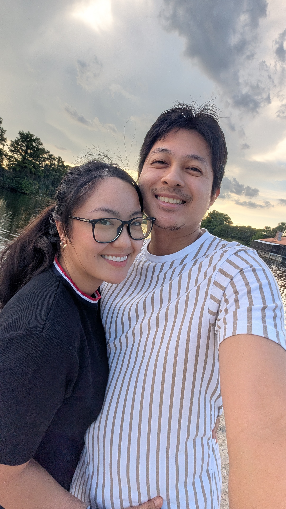
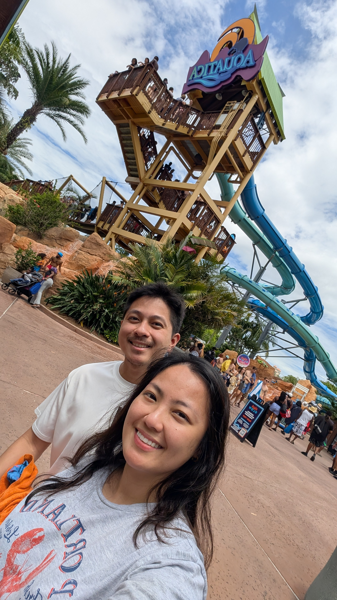
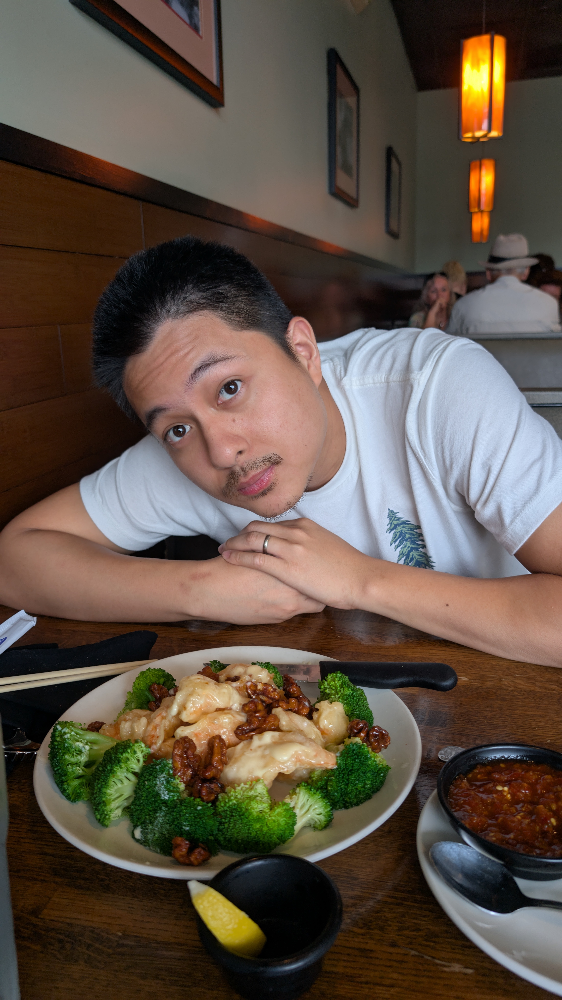
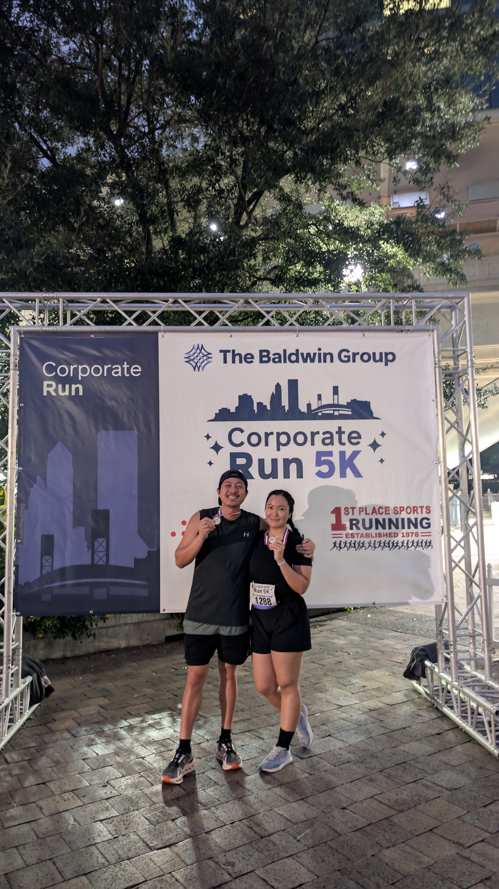

CompTIA
A little about me
Building a career in IT & cybersecurity.
I’m a University of North Florida Information Technology alumnus with a strong academic foundation and CompTIA certifications across support, networking, server, and security. I’m interested in how technology works behind the scenes—and in helping keep the systems people rely on dependable and secure.
I’m continuing to grow my knowledge across IT, with a particular interest in cybersecurity and the networks and systems that make it possible. This site is a snapshot of what I’ve learned, what I’m exploring, and a few things I enjoy outside of tech.
Knowledge foundation
CompTIA certifications
Credentials spanning core IT support, infrastructure, and security.
CompTIA
Network+
CompTIA
Security+
CompTIA
Server+
What I’m building on
IT skillsets
Foundational knowledge areas connected to my CompTIA certifications.
IT support
Troubleshooting fundamentals across hardware, software, and end-user systems.
Networking
Core concepts for understanding network connectivity and infrastructure.
Server systems
Foundations in server hardware, administration concepts, and virtualization.
Security fundamentals
Principles for reducing risk and protecting systems, access, and information.
Type help to see what you can ask about.
Try: help · skills · certifications · interests · contact
Areas I’m exploring
Where technology meets people
Cybersecurity
Learning how to protect information, systems, and the people who depend on them.
Networks & infrastructure
Exploring the connections and underlying systems that keep technology running.
IT support & systems
Building on core IT knowledge to make everyday technology more reliable and useful.
Off the clock
A few things I enjoy
Technology is a big interest, but it’s not the only one. Here are a few snapshots from life outside the screen.



